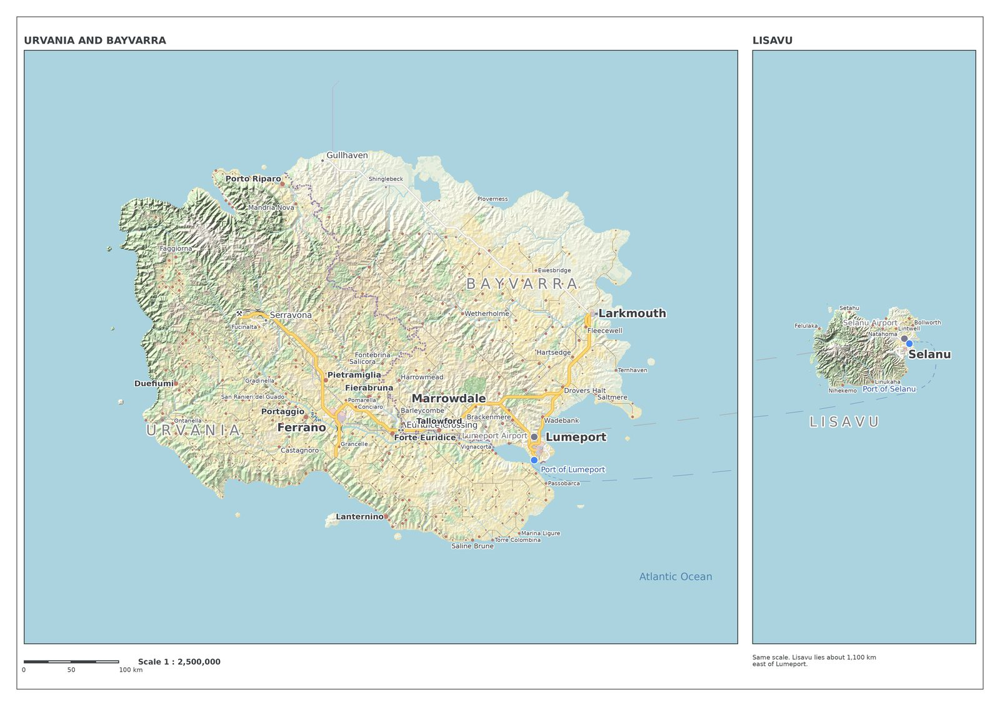

The UBL World · UBL 2.5
Three countries, one trade accord, every document explained
Urvania, Bayvarra and the island of Lisavu trade under the Lumeport Trade Accord. Their mines, factories, carriers, ports, shops, banks and authorities order, ship, declare, invoice and pay each other in UBL 2.5, and every value in every document comes with the reason why it is that value.
Explore the map Follow the trade
A fictional world, made to show UBL 2.5 in use · work in progress · not an OASIS publication

The map
The three countries in isometric tiles: the towns, the parties in them, the roads, railways, rivers and pipelines, and the routes the goods take.
Trade
The flows of trade, each told as a story with its documents: from the ore at the mine to the bench in the park, the cotton bale and the power on the grid.
Parties
Who is who: what each party does, how it identifies itself, and every document it sends, receives or is named in.
Rules of the Accord
The specifications the documents claim, from the Accord's transactions to the national and community rules, and the code lists they use.
The map sheet
The world as a printed map: an A3 sheet at 1 : 2,500,000 with the landscape, the towns, roads and railways, and Lisavu in its own panel.
About this project
Why this world exists, how it is made and checked, how much of UBL 2.5 it covers, and the OASIS sample documents of every UBL release.